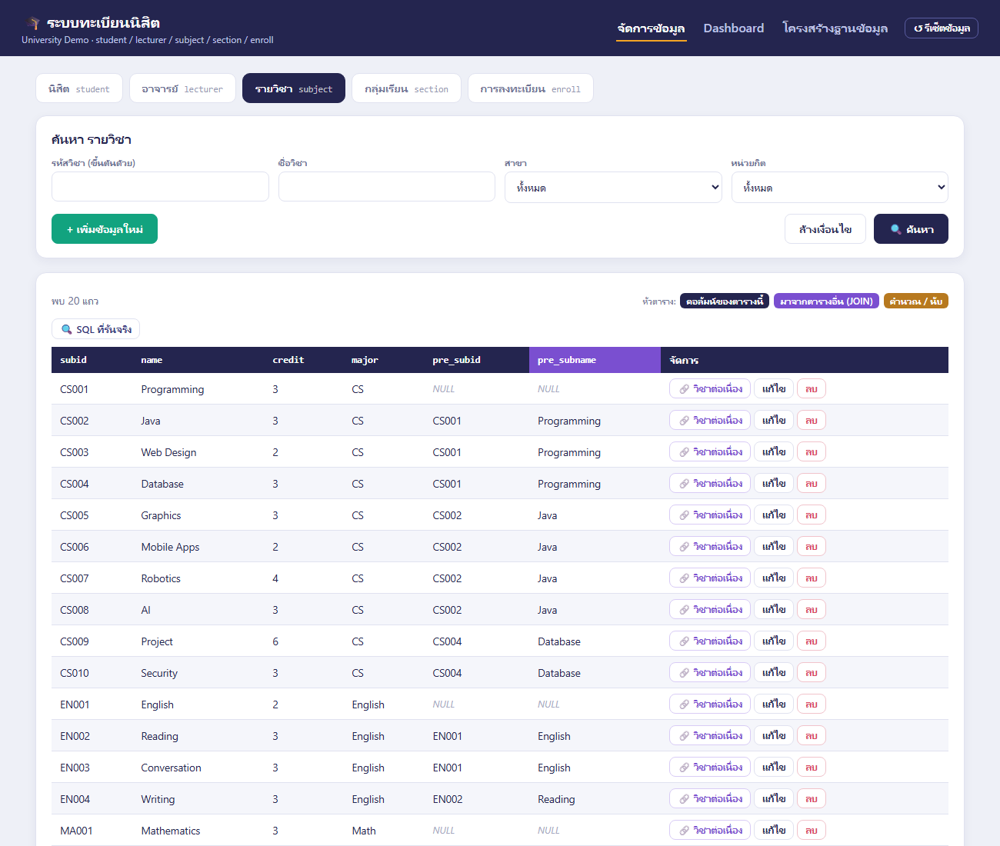
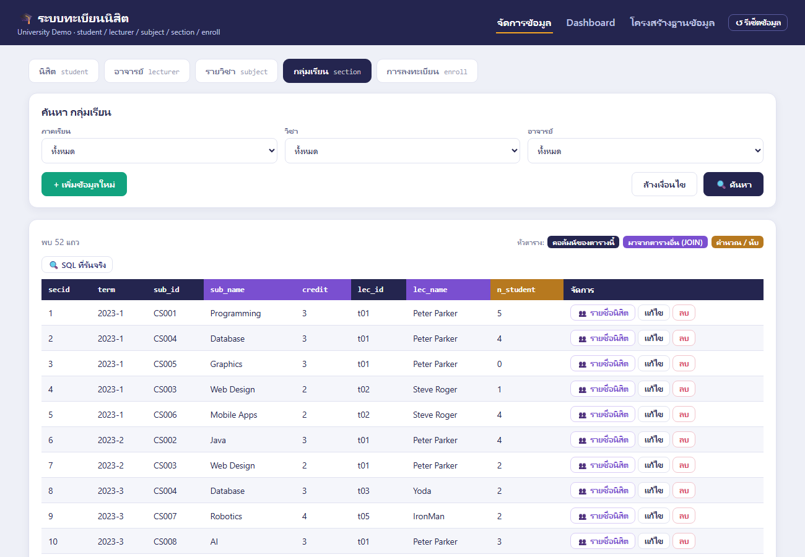
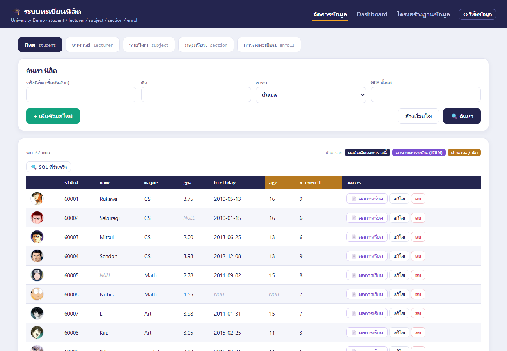
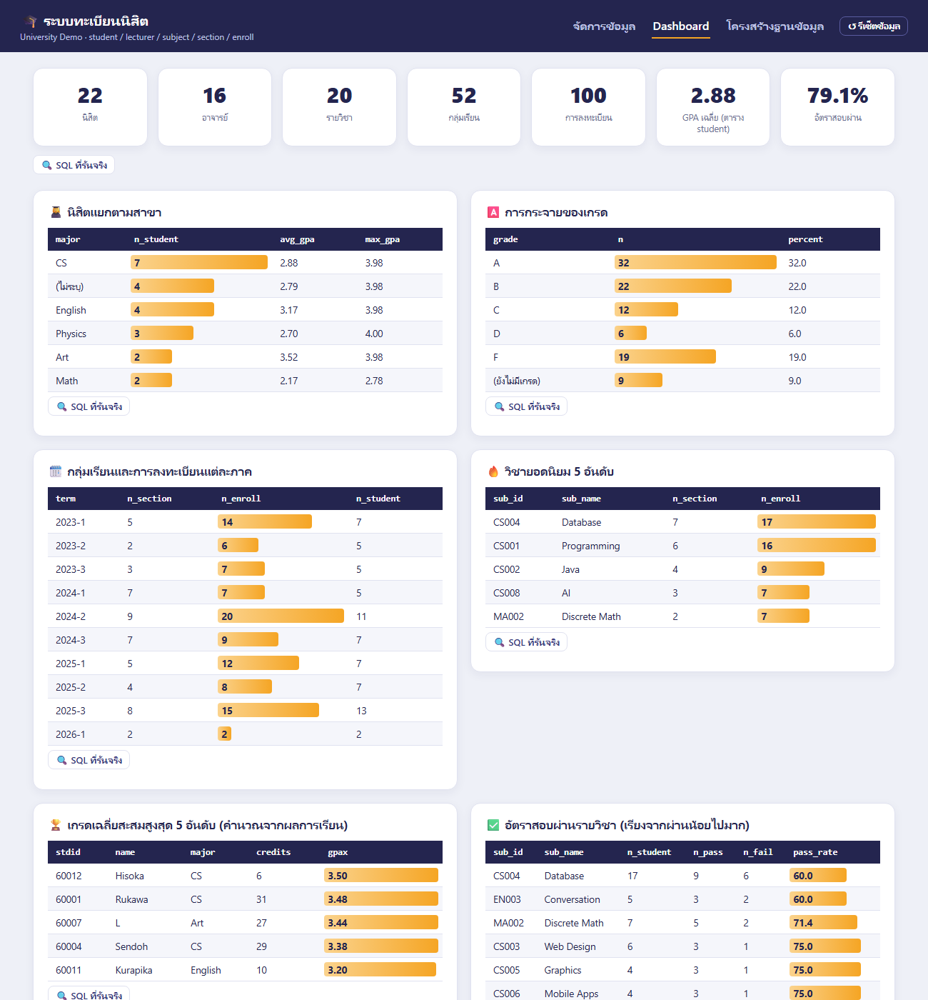
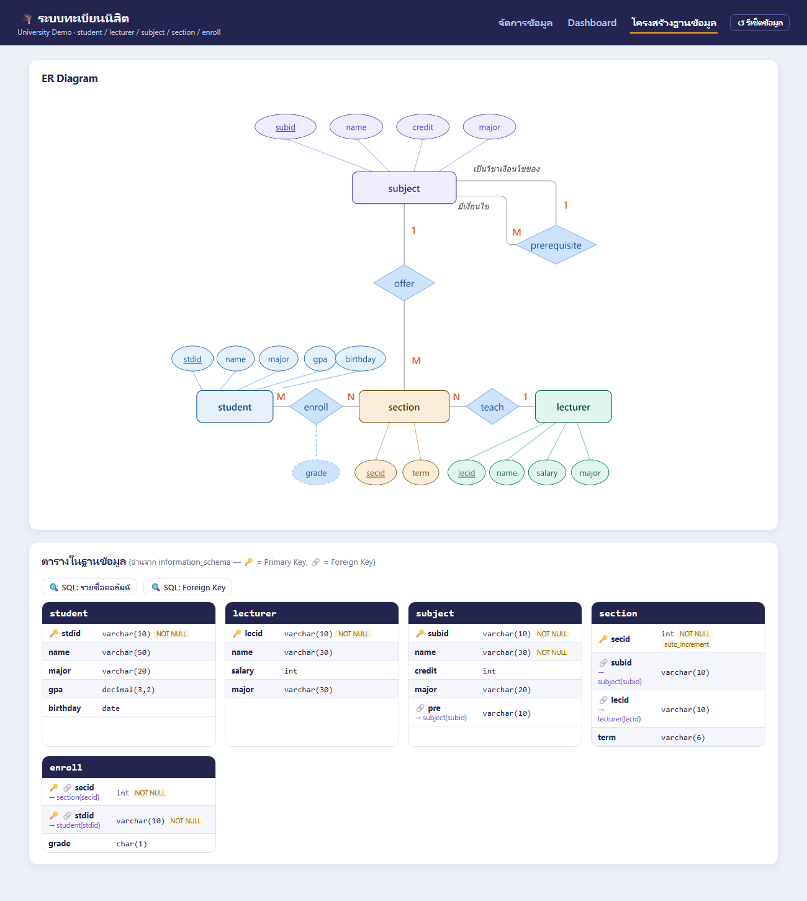

ภาคผนวก ง · ตัวอย่าง Website University
เว็บแอป Flask + MySQL ที่ใช้ฐานข้อมูลกรณีศึกษาของวิชา — ดูว่าตาราง student, lecturer, subject, section, enroll เมื่อเป็นเว็บจริงหน้าตาเป็นอย่างไร และ SQL แบบไหนอยู่เบื้องหลังแต่ละหน้า
ใช้ฐานข้อมูลชุดเดียวกับ ภาคผนวก ก ทุกตาราง ทุกแถว — มีหน้าจัดการข้อมูล (ค้นหา / เพิ่ม / แก้ไข / ลบ) หน้า Dashboard และหน้าโครงสร้างฐานข้อมูล ทุกตารางบนเว็บมีปุ่ม 🔍 SQL ที่รันจริง ให้กดดูคำสั่งที่ server ส่งไปยัง MySQL
1 ติดตั้งและรัน
- แตกไฟล์ zip แล้วเปิด Terminal ในโฟลเดอร์
university_schema_site - ติดตั้งไลบรารี:
pip install -r requirements.txt(Flask + mysql-connector-python) - แก้
config.pyให้ตรงกับ MySQL ที่ใช้ — ค่าเริ่มต้นคือlocalhost/root/ ฐานข้อมูลuniversityหรือใช้บัญชีบนเซิร์ฟเวอร์ของวิชา (ภาคผนวก ค) ก็ได้ - รัน
python app.pyแล้วเปิดhttp://127.0.0.1:9001 - ครั้งแรกกดปุ่ม ↺ รีเซ็ตข้อมูล มุมขวาบน — เว็บจะสร้างฐานข้อมูลและรัน
schema.sqlให้ (ทดลองเพิ่ม/ลบข้อมูลแล้วอยากได้ข้อมูลเดิมคืน ก็กดปุ่มนี้อีกครั้ง)
university_schema_site/ ├── app.py # รับคำขอจากหน้าเว็บ แล้วเรียกฟังก์ชันใน db.py ├── db.py # ★ SQL ทุกคำสั่งของเว็บอยู่ที่นี่ (ค้นหา / CRUD / รายงาน) ├── config.py # ค่าเชื่อมต่อ MySQL ├── schema.sql # สร้างตาราง + ข้อมูล (ชุดเดียวกับภาคผนวก ก) ├── templates/ # หน้า HTML: index (จัดการข้อมูล), dashboard, schema └── static/ # JavaScript + CSS + รูปนิสิต/อาจารย์ (images/รหัส.jpg)
แยกไฟล์แบบเดียวกับ Library Tutorial (ภาคผนวก จ) — หน้าเว็บ (JavaScript) ยิงคำขอไปที่ app.py → app.py เรียกฟังก์ชันใน db.py → db.py รัน SQL แล้วส่งผลกลับเป็น JSON ใช้เว็บนี้เป็นตัวอย่างอ้างอิงตอนทำโปรเจคกลุ่มได้
2 หน้าจัดการข้อมูล — ตารางบนเว็บไม่ใช่แค่ SELECT *
แต่ละแท็บแสดงข้อมูลที่ JOIN แล้ว เพื่อให้ผู้ใช้อ่านรู้เรื่อง — เช่น ผู้ใช้อยากเห็น “ชื่อวิชา” และ “ชื่ออาจารย์” ไม่ใช่แค่รหัส สีหัวตารางบอกที่มาของคอลัมน์: คอลัมน์ของตารางนั้น มาจากตารางอื่น (JOIN) คำนวณ / นับ
| แท็บ | สิ่งที่แสดงเพิ่มจากตารางจริง | เทคนิค SQL | ปุ่มในแต่ละแถว |
|---|---|---|---|
| นิสิต | อายุ, จำนวนวิชาที่ลงทะเบียน, รูปนิสิต | TIMESTAMPDIFF, LEFT JOIN + COUNT | 📄 ผลการเรียน (คำนวณ GPAX) |
| อาจารย์ | จำนวนกลุ่มเรียนที่สอน, รูปอาจารย์ | LEFT JOIN + COUNT | 📚 กลุ่มที่สอน |
| รายวิชา | pre_subid, pre_subname | Self Join (LEFT JOIN subject กับตัวเอง) | 🔗 วิชาต่อเนื่อง |
| กลุ่มเรียน | sub_id, sub_name, lec_id, lec_name, จำนวนนิสิต | INNER JOIN 2 ตาราง + LEFT JOIN enroll | 👥 รายชื่อนิสิต |
| การลงทะเบียน | ภาคเรียน, ชื่อวิชา, ชื่อนิสิต | INNER JOIN 4 ตาราง, PK 2 คอลัมน์ | แก้เกรด |

pre_subname (หัวสีม่วง) มาจากการ JOIN ตาราง subject กับตัวเอง · วิชาที่ไม่มีวิชาบังคับก่อนแสดง NULLรายวิชา: แสดงวิชาบังคับก่อนเป็นชื่อ
คอลัมน์ pre เก็บแค่รหัสวิชา จึงต้อง JOIN ตาราง subject กับตัวเองเพื่อเอาชื่อมาแสดง และต้องใช้ LEFT JOIN เพราะวิชาที่ไม่มีวิชาบังคับก่อน (pre เป็น NULL) ต้องยังอยู่ในรายการ
SELECT s.subid, s.name, s.credit, s.major,
s.pre AS pre_subid,
p.name AS pre_subname
FROM subject s
LEFT JOIN subject p ON s.pre = p.subid
ORDER BY s.subid;| subid | name | credit | major | pre_subid | pre_subname |
|---|---|---|---|---|---|
| CS001 | Programming | 3 | CS | NULL | NULL |
| CS002 | Java | 3 | CS | CS001 | Programming |
| CS003 | Web Design | 2 | CS | CS001 | Programming |
| CS004 | Database | 3 | CS | CS001 | Programming |
| CS005 | Graphics | 3 | CS | CS002 | Java |
| CS006 | Mobile Apps | 2 | CS | CS002 | Java |
| CS007 | Robotics | 4 | CS | CS002 | Java |
| CS008 | AI | 3 | CS | CS002 | Java |
กลุ่มเรียน: รหัส + ชื่อวิชา + ชื่ออาจารย์ + จำนวนนิสิต
ทุกกลุ่มเรียนมีวิชาและอาจารย์เสมอจึงใช้ INNER JOIN ได้ ส่วน enroll ใช้ LEFT JOIN เพื่อให้กลุ่มที่ยังไม่มีใครลงทะเบียนแสดงเป็น 0 แทนที่จะหายไป
SELECT sec.secid, sec.term,
sec.subid AS sub_id, sub.name AS sub_name, sub.credit,
sec.lecid AS lec_id, l.name AS lec_name,
COUNT(e.stdid) AS n_student
FROM section sec
INNER JOIN subject sub ON sec.subid = sub.subid
INNER JOIN lecturer l ON sec.lecid = l.lecid
LEFT JOIN enroll e ON sec.secid = e.secid
WHERE 1=1
AND sec.term = '2024-1'
GROUP BY sec.secid
ORDER BY sec.term, sec.secid;| secid | term | sub_id | sub_name | credit | lec_id | lec_name | n_student |
|---|---|---|---|---|---|---|---|
| 11 | 2024-1 | CS001 | Programming | 3 | t01 | Peter Parker | 1 |
| 12 | 2024-1 | CS004 | Database | 3 | t01 | Peter Parker | 4 |
| 13 | 2024-1 | CS005 | Graphics | 3 | t02 | Steve Roger | 2 |
| 24 | 2024-1 | CS001 | Programming | 3 | t02 | Steve Roger | 0 |
| 25 | 2024-1 | CS006 | Mobile Apps | 2 | t03 | Yoda | 0 |
| 26 | 2024-1 | CS007 | Robotics | 4 | t02 | Steve Roger | 0 |
| 27 | 2024-1 | MA001 | Mathematics | 3 | t05 | IronMan | 0 |

ช่องค้นหาที่ผู้ใช้กรอกมีจำนวนไม่แน่นอน db.py จึงเริ่มด้วย WHERE 1=1 (จริงเสมอ) แล้วต่อ AND เงื่อนไข เฉพาะช่องที่กรอก — ค่าที่ผู้ใช้พิมพ์ส่งผ่าน placeholder %s ไม่ได้ต่อสตริงเข้าไปตรง ๆ จึงปลอดภัยจาก SQL Injection (บทที่ 10)
นิสิต: ผลการเรียนและเกรดเฉลี่ยสะสม
กดปุ่ม 📄 ผลการเรียน ในแถวของนิสิต เว็บจะรันคำสั่งนี้ (JOIN 4 ตาราง) แล้วคำนวณ GPAX = Σ(แต้ม × หน่วยกิต) ÷ Σ หน่วยกิต
SELECT sec.term, sub.subid AS sub_id, sub.name AS sub_name, sub.credit,
l.name AS lec_name, e.grade,
CASE e.grade WHEN 'A' THEN 4 WHEN 'B' THEN 3 WHEN 'C' THEN 2
WHEN 'D' THEN 1 WHEN 'F' THEN 0 END AS point
FROM enroll e
INNER JOIN section sec ON e.secid = sec.secid
INNER JOIN subject sub ON sec.subid = sub.subid
INNER JOIN lecturer l ON sec.lecid = l.lecid
WHERE e.stdid = '60004'
ORDER BY sec.term, sub.subid;| term | sub_id | sub_name | credit | lec_name | grade | point |
|---|---|---|---|---|---|---|
| 2023-1 | CS003 | Web Design | 2 | Steve Roger | F | 0 |
| 2023-1 | CS006 | Mobile Apps | 2 | Steve Roger | B | 3 |
| 2023-3 | CS007 | Robotics | 4 | IronMan | C | 2 |
| 2024-1 | CS004 | Database | 3 | Peter Parker | A | 4 |
| 2024-1 | CS005 | Graphics | 3 | Steve Roger | A | 4 |
| 2024-2 | CS001 | Programming | 3 | Peter Parker | A | 4 |
| 2024-2 | CS009 | Project | 6 | Steve Roger | A | 4 |
| 2025-2 | CS008 | AI | 3 | Yoda | A | 4 |
| 2025-3 | CS010 | Security | 3 | Steve Roger | A | 4 |

เพิ่ม / แก้ไข / ลบ — เห็นข้อกำหนดบังคับทำงานจริง
ฟอร์มส่งข้อมูลไปที่ db.py ซึ่งรัน INSERT / UPDATE / DELETE แล้วแสดง “คำสั่งที่รันล่าสุด” ใต้ตาราง ถ้าข้อมูลผิดกฎ MySQL จะปฏิเสธ และเว็บแปลข้อความ error ให้อ่านง่าย — ลองทำดู:
| ลองทำ | ผลที่ได้ | เพราะ |
|---|---|---|
| เพิ่มนิสิตรหัสซ้ำ เช่น 60001 | Error 1062 | PRIMARY KEY |
| แก้ GPA เป็น 5 | Error 3819 | CHECK std_gpa |
| ลบวิชา CS001 | Error 1451 | วิชาอื่นใช้ CS001 เป็นวิชาบังคับก่อน (FK sub_fk_pre) |
| เปิดกลุ่มเรียน CS001 / t01 / 2023-1 ซ้ำ | Error 1062 | UNIQUE (subid, lecid, term) |
| ลบนิสิต 60001 | สำเร็จ และประวัติลงทะเบียนหายไปด้วย | FK ของ enroll เป็น ON DELETE CASCADE |
3 Dashboard — รายงานจากคำสั่ง SQL
การ์ดตัวเลขด้านบนมาจากคำสั่งเดียวที่มี scalar subquery หลายตัว ส่วนกล่องรายงานแต่ละกล่องคือฟังก์ชัน report_xxx() หนึ่งฟังก์ชันใน db.py (มีแท่งกราฟในคอลัมน์ตัวเลขหลัก)

| รายงาน | เทคนิค SQL | บทที่เรียน |
|---|---|---|
| นิสิตแยกตามสาขา | GROUP BY + IFNULL | 5 |
| การกระจายของเกรด | COUNT + ร้อยละด้วย subquery | 5–6 |
| กลุ่มเรียนและการลงทะเบียนแต่ละภาค | LEFT JOIN + COUNT(DISTINCT) | 6 |
| วิชายอดนิยม 5 อันดับ | JOIN + GROUP BY + LIMIT | 6 |
| เกรดเฉลี่ยสะสมสูงสุด 5 อันดับ | CASE แปลงเกรดเป็นแต้ม + SUM ถ่วงหน่วยกิต | 6 |
| อัตราสอบผ่านรายวิชา | SUM(เงื่อนไข) / AVG(เงื่อนไข) | 6 |
| ภาระงานสอนของอาจารย์ | LEFT JOIN 2 ชั้น | 6 |
| เงินเดือนอาจารย์แยกตามสาขา | AVG / MIN / MAX (ไม่นับ NULL) | 5 |
| กลุ่มเรียนที่ไม่มีคนลงทะเบียน | NOT EXISTS | 6 |
| นิสิตที่ยังไม่เคยลงทะเบียน | LEFT JOIN … IS NULL | 6 |
SELECT l.lecid AS lec_id, l.name AS lec_name, l.major,
COUNT(DISTINCT sec.secid) AS n_section,
COUNT(e.stdid) AS n_student
FROM lecturer l
LEFT JOIN section sec ON l.lecid = sec.lecid
LEFT JOIN enroll e ON sec.secid = e.secid
GROUP BY l.lecid
ORDER BY n_student DESC, l.lecid;| lec_id | lec_name | major | n_section | n_student |
|---|---|---|---|---|
| t01 | Peter Parker | CS | 14 | 37 |
| t02 | Steve Roger | CS | 11 | 17 |
| t03 | Yoda | Math | 8 | 13 |
| t05 | IronMan | Thai | 6 | 11 |
| t04 | Post Malone | Thai | 4 | 5 |
| t06 | Goku | English | 2 | 5 |
เขียนฟังก์ชันใหม่ใน db.py ให้ return run_query(sql) แล้วเพิ่ม 1 บรรทัดในรายการ REPORTS ท้ายไฟล์ — หน้า Dashboard สร้างกล่องรายงานให้เองโดยไม่ต้องแก้ไฟล์อื่น ลองนำคำสั่งจากแบบฝึกหัดบทที่ 6–7 มาใส่ดู
4 หน้าโครงสร้างฐานข้อมูล
แสดง ER Diagram คู่กับโครงสร้างตารางที่อ่านจาก information_schema (🔑 = Primary Key, 🔗 = Foreign Key และตารางที่อ้างถึง) — เทียบให้เห็นว่า Entity และ Relationship ในบทที่ 2 กลายเป็นตารางและ Foreign Key ในบทที่ 3 อย่างไร
